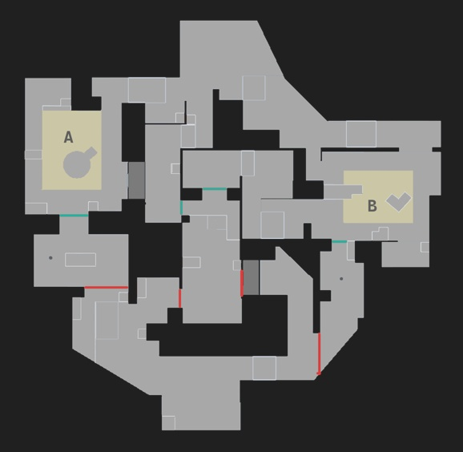
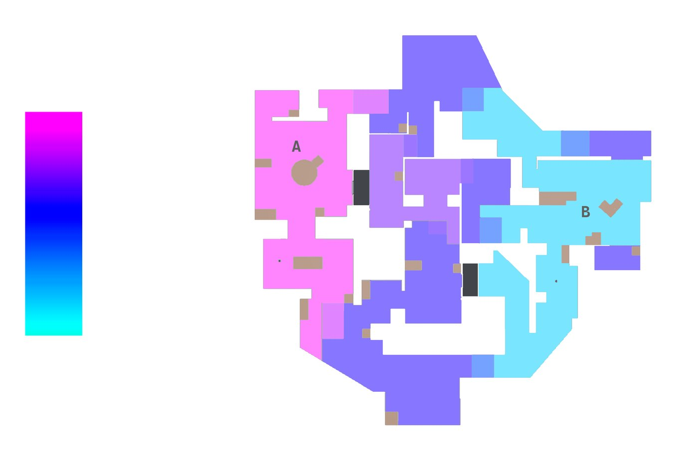
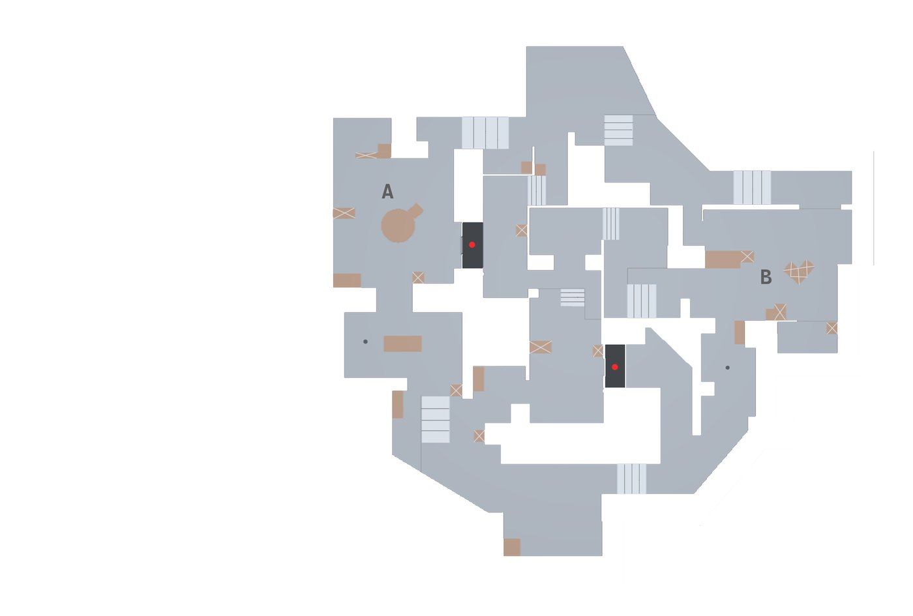
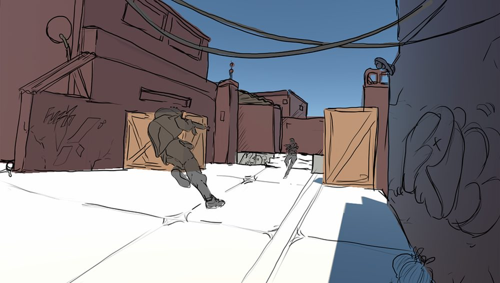
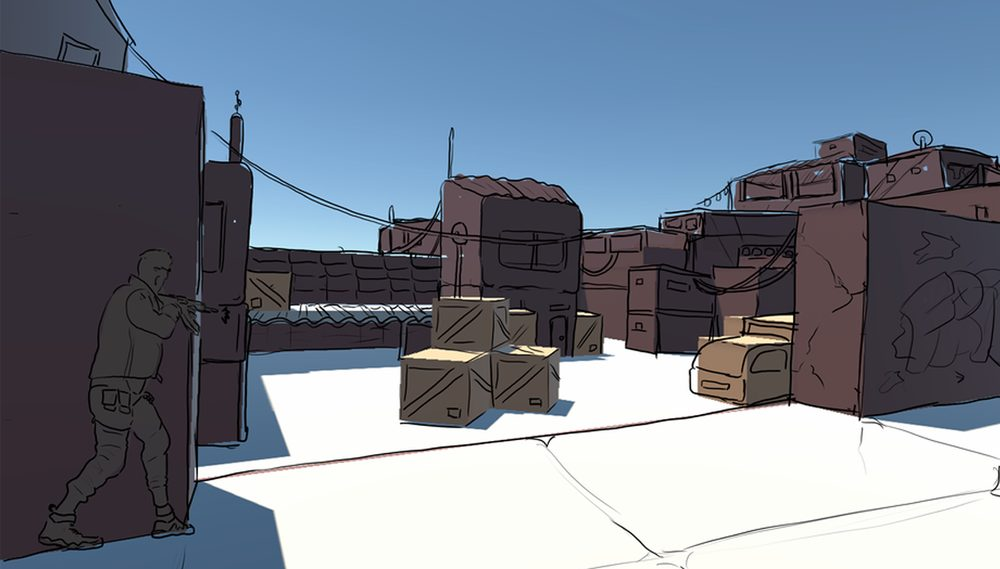
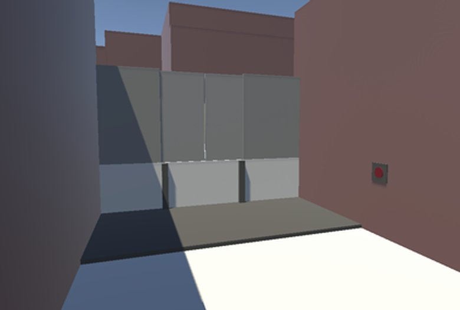
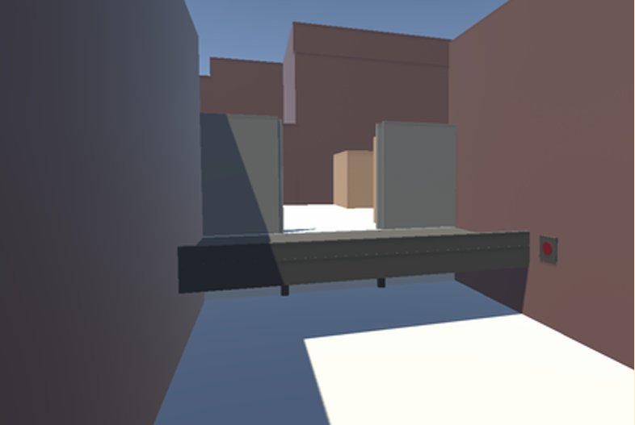

Friction: Custom VALORANT Map
A two-site tactical map set in the hillside favelas of Rio de Janeiro. It is built around one question: what happens when one site sits far above the other? Kingdom Corporation runs radianite experiments under the neighborhood, and VALORANT's Protocol agents have come to shut it down. Site A is on the high ground, Site B is low, and mid is the only clean link between them.
The Mechanic: Elevators
Two elevators are the main mechanic of mid. They are loud and open new strategies. Calling one tells the enemy team where you are, and in return you get a shortcut and a new angle when the doors open. Once an elevator starts, it cannot be stopped or used again until it finishes, so using it is a full commitment.
From concept to final form
The first paper sketch had the right skeleton, two sites and one mid, but not the details. Several sightlines were too wide and felt like an open arena instead of a tactical map, and the height changes were not clear enough to block out. The build pass added walls to tighten those angles and fixed where the stairs needed to go.